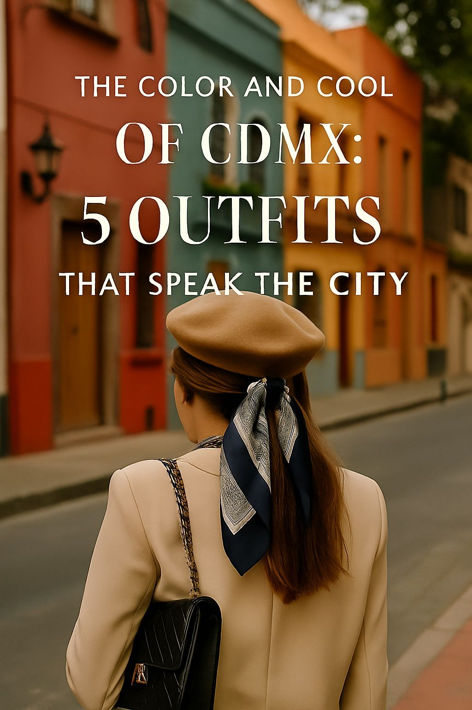
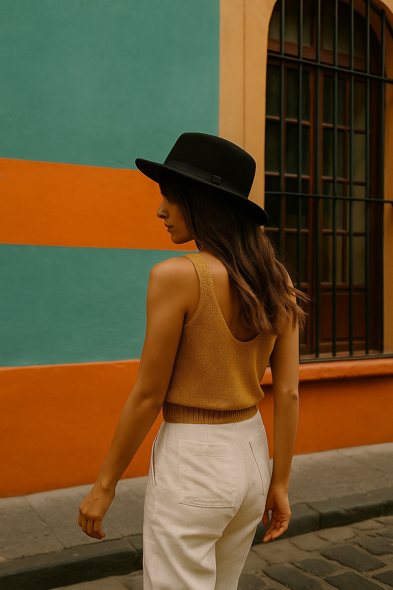

The Color and Cool of CDMX: 5 Outfits That Speak the City
Mexico City’s street style is a blend of color, confidence, and cultural remix. If you think neutrals run the fashion world, CDMX will gladly prove you wrong.
Welcome to the land of bold contrasts — where earthy tones meet explosive prints, wide-brim hats dance with graphic sneakers, and linen flirts shamelessly with leather. In CDMX, fashion is not a trend — it’s a declaration of rhythm, chaos, and personality.
1. Linen & Leather, Meet in Roma Norte
This look says, “I’m going to brunch, and maybe a revolution.” The woven bag keeps it grounded, the long coat adds attitude. (Buy it here)
2. Urban Nomad, Coyoacán Edition
Sun hat, flowy skirt, and walls as bold as the wearer. This outfit makes walking look like performance art. (Buy it here)
3. Graphic Simplicity in La Condesa
Minimalist cut meets maximalist color blocking. That turquoise wall didn’t choose her, she chose it. (Buy it here)
4. Chill Elegance, Paseo de la Reforma
Classic hat, sleeveless white dress, and unapologetic posture. This look walks slower so you can admire it. (Buy it here)
5. Black Beret, No Apologies
Paris might have claimed the beret, but CDMX gave it a backbone. Paired with a beige coat and bold stance. (Buy it here)
Published: 2025-05-12
← Back to Articles